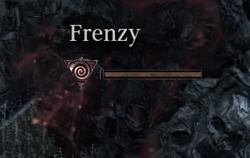

Frenzy is a mechanic of Bloodborne.
It fills up like a bleed or poison meter, and it lowers both your damage intake and output.
Frenzy works similarly to bleed in Dark Souls. When the Frenzy meter is filled, a large amount of the player's health is lost instantly. However, unlike the Bleed status, Frenzy will continue building up once you receive it. Because of this, you don't necessarily need to keep getting hit to Frenzy; simply getting hit once or twice can cause it. It will eventually cap and stop building up. (needs testing whether Frenzy build-up stacks or if the timer is reset on each hit). It is speculated that Frenzy is the result of the Hunter being forced to process information incomprehensible to humans, such as information about the Great Ones, Eldritch Truth, or Cosmos.
Sources of Frenzy
Some enemies in Bloodborne inflict Frenzy. They are:
- Amygdala and Lesser Amygdala causes frenzy with its "blue light" grab attack.
- The red cross wielding enemies in the Cathedral Ward cause frenzy with their attacks.
- Fly-like enemies in Byrgenwerth. Their grab attack causes Frenzy.
- The very deformed Goliath Pigs breath causes Frenzy
- Winter Lanterns cause frenzy in line of sight, and also during grab attacks.
- The orange light from Brain of Mensis at the start of Nightmare of Mensis causes Frenzy buildup when the player is "seen" by it.
- Ebrietas, Daughter of the Cosmos spit attack.
- The Celestial Larvae causes frenzy.
- The Bloodletter weapon causes frenzy buildup on yourself and nearby enemies when performing its L2 attack in trick mode.
Notes
- Having Insight reduces your frenzy resistance, the more insight, the lower the resistance.
- Each Insight tends to subtract 4-6 points of Frenzy RES.
- The Deep Sea Rune will increase frenzy resistance.
- Sedatives will clear all frenzy buildup.
- Blue Elixir will reduce the line of sight on some frenzy enemies, and can be a great help at the start of Nightmare of Mensis. (needs confirmation)
- You are immune to frenzy's damage if it activates during a visceral attack.
- Running away after defeating the enemy will not stop the frenzy build up; it's recommended to heal to full health in case the meter threatens to fill completely.
Lore
- It is speculated that Frenzy is when the Player Character (herein PC) is forced to process information pertaining to The Great Ones or Eldritch Truth, which results in them briefly going insane, or rather, to briefly experience a Frenzy that is physically painful. The reason for this speculation is the various sources that inflict Frenzy and their meaning/interaction with the PC in the game.
- Winter Lanterns have a head composed of what appear to be dead messengers, and wear a bloody variant of the Doll Set. The Messengers and, more importantly, the Doll are some of the very few entities to assist you throughout the game, while the latter outright helps you the most throughout the game. When the PC is suddenly confronted with the fact that variants of these entities, that are most likely related to their helpful counterparts, are trying to kill them, the are unable to process the information, or rather, cannot process it, but are forced to try anyway, resulting in Frenzy. This is shown the most predominantly out of all the Frenzy buildups, as you consistently try to look away from the Brain Trusts, hide from them, whatever the PC does the bottom line is that they do not look at them, after all, then they'd be forced to process unwanted, and even denied, information.
- Amygdala and Lesser Amygdala's "blue light" grab attack forces the PC to interact face to face with a Great One, something related to the Eldritch Truth, which by nature is incomprehensible to humans. The result of this is Frenzy.
- Ebrietas, Celestial Larvae, and Maneater Boar can cause frenzy by vomiting on the PC. The reason for the first two inflicting Frenzy is because of their status as a Great One, and as such they are related to the Eldritch Truth and Cosmos which are incomprehensible to humans, ergo, Frenzy. The reason for the Boar is speculated.
- The Gardens of Eyes at Byrgenwerth, transformed people who came into contact with the Eldritch Truth at Byrgenwerth, also cause frenzy buildup, though most players assume it is due to the PC back being stabbed, the Garden of Eyes is also whispering a high pitched screech into the PCs ear as they are doing this, which is the true cause of the Frenzy buildup. The initial damage is from the stabs to the back.
- The speculation of Frenzy's initially purposed meaning earlier in this section is reinforced through the mechanic of Insight. Insight is the amount of knowledge the PC has about the world around them, and is the result of the PC slowly learning, discovering and processing information pertaining to the Great Ones and the Eldritch Truth. Frenzy is the result of the PC forced to process the aforementioned information through various methods. Furthermore, the more Insight you have, the lower your resistance to Frenzy is, which when explained is because the PC is able to comprehend some aspects of the Eldritch Truth and great Ones, but not much, which simply leaves them with more questions, and so they go insane even more quickly as a result of this.
 Anonymous
AnonymousSo what are these blood spikes that appear on you when your frenzy builds up?
At first I thought the spikes were shooting from the brain of Mensis and cause frenzy buildup, but then I saw attacks from the winter lanterns also have a similar effect.
What are they?
- Anonymous
- Anonymous
When you have low insight, you're essentially too stupid to fully comprehend what you're learning so the frenzy is less effective on you. The more insight you have, the more you can grasp forbidden knowledge, which also means that the knowledge is more destructive to you.
- Anonymous
So does the bloodletter's frenzy attack effect bosses ? Or is it only for npc's and online players ?
- Anonymous
"The most merciful thing in the world, I think, is the inability of the human mind to correlate all its contents. We live on a placid island of ignorance in the midst of black seas of infinity, and it was not meant that we should voyage far. The sciences, each straining in its own direction, have hitherto harmed us little; but some day the piecing together of dissociated knowledge will open up such terrifying vistas of reality, and of our frightful position therein, that we shall either go mad from the revelation or flee from the deadly light into the peace and safety of a new dark age."
- H.P. Lovecraft
- Anonymous
the amount of stupid **** in this comment section is hilarious
- Anonymous
Are you ****ing kidding, I’ve struggled halfway through the nightmare frontier and now I’m hitting a brick ****ing wall just because I have 60 insight, what is this bullshit mechanic
- Anonymous
- Anonymous
- Anonymous
The Crowfeather set has the highest Frenzy resistance with the Madman set being the lowest.
- Anonymous
I didn't see it on this page, but running away from a source of frenzy drains your health bar rapidly
- Anonymous
- Anonymous
I love bloodborne it’s my favorite game in the soulsborne series but this mechanic is just a pile of bull*****It does way too much damage and just about everything that inflicts it will do just enough damage so that when it activates it’ll finally kill you. On top of that even passive things that inflict it will still make you take damage because of those stupid little blood spikes that start poking out of you when it frenzy starts to build up. Just an op bull*****mechanic over all. Also ***** this website on mobile. I can’t even type out a message without it lagging like hell.
- Anonymous
If you get frenzied, there is a full bar of frenzy that shows for about 2 seconds after it happens, if you use a Bold Hunter's Mark and teleport away while that full bar shows up after you got frenzied, it will act as if it is a new bar that is already full and you will get immediately frenzied when you load in.
- Anonymous
I really dont know why From does this kind of*****. it is the least interactive thing ever. In every game there is the one hit kill after a bar is filled mechanic. curse in dark souls, frenzy in bloodborne, terror in sekiro. the games are greatly designed, but this***** is terrible. the frenzy IMO is especially bad, because you have to drink sedatives but they dont give you even a modicum of resistance or immunity, so it is pretty impossible to deal with. im fine with the one in the level that makes you hide, but the winter lanters are full of*****, especially since they have that bull*****grab attack that is inconsistent to dodge.
- Anonymous
Absolutely hate it. It's a op bs stat I have ever seen in soul games. I am not against it being in game but the way it works its just to op if you ask me and that damage holy***** the first time it hit me I was: WTF!? O_o
- Anonymous
WALL OF TEXT BELOW! I think this status effect covers a variety of different outcomes that each end with a similar result, extreme damage... the frenzy causing vomit from each creature must cause a nasty sensory overload causing a brain aneurysm,, Winter Lanterns and the Brain of Mensis are literally causing eyes to painfully open on your brain, and being eaten by Ebrietas or grabbed by Amygdala since seeing them up close causes you to sense their alien thoughts which causes them to crush your brain or it might just trigger a brain aneurysm/heart attack..... Why do I figure it could be so varied? Insight isn't just how much you know about the things man wasn't meant to know, it makes you more vulnerable to such attacks either due to stress, or because the nasty affects take much less time to kick in on you since you are attuned to the same energies as the monsters. I don't know why Bloodletter or the Churchmen with spears cause frenzy, but I assume those both either literally grind at your soul and insight means you feel the effect more painfully, or maybe it has an odd effect on your blood and causes a painful pop from clotting which one is just more vulnerable to as they become more attuned to the same energies that inhabit the weapons(I mean you see the read after getting enough insight so it is possible). ... I don't know why the fly-like humanoids cause frenzy, but I just assume they are trying to share their knowledge, either because they might not be intentionally malicious, and want to "enlighten" you... or they know how wimpy they are, and figure triggering a brain aneurysm is their only means of offense. thoughts on all of this?
Does frenzy affect other enemies? Like a slam from the bloodletter, or luring to a winter lantern?
Me listening to someone eating like a horse, slurping, or chewing gum.....
- Anonymous
Me listening to someone eating like a horse, slurping, or chewing gum.....
- Anonymous
I've gotten frenzied and never lost health can someone explain please
- Anonymous
Playing the music box stops frenzy from building. Or does it just seem that way to me?
- Anonymous
- Anonymous
Bloodletter L2 is the only way to induce frenzy to enemies from players I presume?
- Anonymous
- Anonymous
It makes no sense that frenzy is the hunter taking damage from information they can not understand, yet frenzy resistance decreases the more insight you have. Wouldn't frenzy resistance actually increase with more insight? Considering the more insight you have, the more you can see what others cannot comprehend.
- Anonymous
I just realized the other day that the icon for Frenzy seems to depict blood intermingled with what could be quicksilver... After all, quicksilver appears in more than just the bullets, and seems to be tied to the arcane. Hell, even some of the lyrics in boss OST's mention "arguam sanguine"--silver blood.
- Anonymous
I'm right outside of the cathedral ward in a circular area with a well in the center. Hidden behind a tree and some tombstones there is a deceased hunter with collectable clothing but standing over the body for a bit spawns some type of blue flashing orb that runs right into that spot. Whats that orb? It lifted me up and instantly filled my frenzy.
- Anonymous
Ive noticed that upon losing insight, my frenzy bar shows up and the max length of the bar is SHORTER and gaining insight INCREASES the bar's length , if insight lowered your frenzy res, wouldn't gaining frenzy shorten the bar instead of make it grow?
- Anonymous
If i spend, lose, or in general reduce the amount of insight i have, does that undo the effects having it in the first place has caused? or has my acquisition to a particular number become permananent? for example the change in enemy attack patterns and the reduced Frenzy resistance. because there is only mention of beasthood returning to its previous state when you lose insight nothing else.
- Anonymous
Its always bothered me it was called frenzy, why not "Madness" "Hysteria" "Consumed" anything other then frenzy? Its a really poor translation choice.
- Anonymous
Thinking about it realistically, Frenzy signals a brain aneurysm or stroke due to stress and elevated blood pressure and heart rate. Hunting isn't a walk in the park, you know...
- Anonymous
As far as i've understood, the beast plague and all this sort of things is caused by a sort of "blood interchange" between humans and The Great Ones (maybe some kind of breeding? I don't know). Curative Blood from the church is probably got by Ebrietas (or a sort of a mix also with the human one), and that's why has its curative power. When you get touched by a lesser form of a Great One (Amygdala, Ebrietas etc.) you got a sort of blood interchange, getting so more Great One's blood than human blood in your body. That cause a sort of frenzy or ecstasy, that you can rid of losing some blood (like when you get your meter full) of assuming some concentrated human blood (the sedatives, that restabilish the right proportion between human and Great One blood). The Insight could be seen as the "percentage" of Great One blood in your body (the higher, the easier to get frenzy). It's just an interpretation, don't know if right or wrong, but i think it would be nice to share it :).
- Anonymous
- Anonymous
the little slug like enemys at the start of the upper cathedral ward cause frenzy if hit by them, enough to fill your meter full with one bite
- Anonymous
How much damage does frenzy do? Is it a certain amount or does it scale with you?
- Anonymous
There's no in game proof, but the reasoning behind vomit and boar breath causing frenzy could be a reference to Lovecraft. The presence of eldritch beings is sometimes said to cause a disgusting other-worldly smell (i.e. Dunwich Horror), horrific to the point of maddening animals and disturbing humans.
- Anonymous
I added the information about how Frenzy is speculated to be the Hunter going insane, it's barebones but it's better than nothing being there. Feel free to edit it, but just try to use information that is widely regarded as accurate.
- Anonymous
I was playing the game and noticed that I could avoid damage from Frenzy by quickstepping. This page makes no mention of it, so I'm not sure if it was a bug, specific situation, or as yet undiscovered. I've only tried dodging it using quicksteps, and only based on the frenzy inflicted by the cross-wielding enemies in Cathedral Ward. Not sure if anyone else knows this, but it made my job much easier.
- Anonymous
Following the theory that frenzy is a type of forced knowledge, wouldn't it make more sense for insight, supposedly the knowledge of the world around you and thoughts on the eldritch truth, to increase frenzy resistance?
- Anonymous
A theory I came across is that Frenzy is the PC being "insighted" to the wrath, or anger, of the Great Ones. Thus, the more insight you have, the less frenzy resistance you have since, with more insight, the more the world is revealed to you. Thus, with higher insight, more Great One wrath/anger is revealed, thus building faster. An example of this is when the Brain of Mensis insights you with it's anger/wrath as you traverse the Nightmare, but once you've dropped it down the hole, it seemingly has given up, and no longer attempts to harm you with Frenzy (or in any way at all). It's not that the being itself naturally gives off Frenzy, otherwise every Great One would naturally do it; the enemy has to *choose* to grant you that insight.
- Anonymous
The mind is ravaged by trying to process forbidden knowledge and the blood of the victim begins to boil.
- Anonymous
The article says that the Mensis Brain has a unique form of frenzy that damages you before the frenzy actually procs. However, I have observed this to be untrue; at the very least, Winter Lanterns are also capable of causing this effect. Does the "pre-frenzy" damage apply to all passive sources of frenzy?
- Anonymous
You're looking at Eldritch abominations. Your brain overloads trying to process it.

Elden Ring has baby mode frenzy, Bloodborne was the true chad.
2
+10
-1